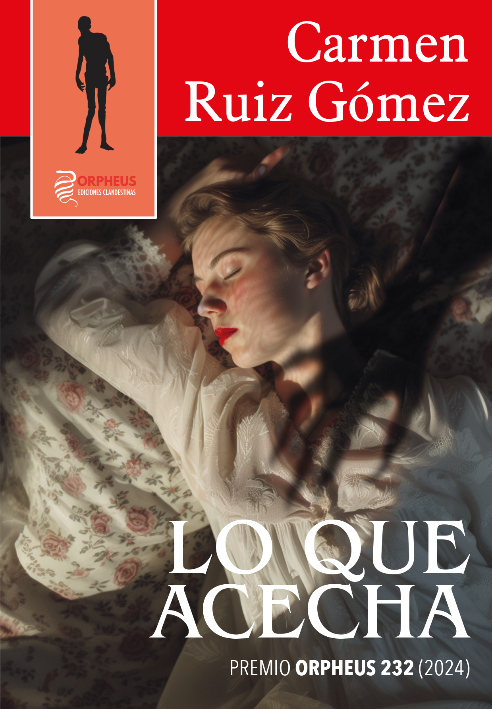

Lo que acecha
Ganadora del I Premio Nacional Miniclandestinos «Orpheus 232» (2024).
Lucy Wright acepta el ofrecimiento de su amigo Audric C. de Luc para reposar en su casa y recuperarse tras una crisis depresiva. Pese a los esmeros de Audric por cuidarla, empieza a sospechar de las verdaderas intenciones de su anfitrión. ¿Realmente quiere lo mejor para ella?
Disponible próximamente en Orpheus Ediciones Miniclandestinas.